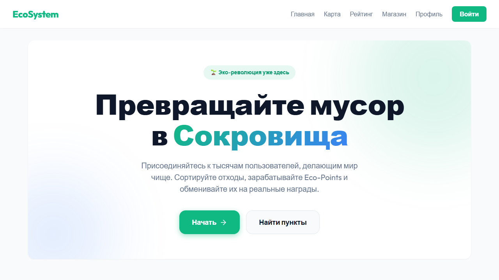
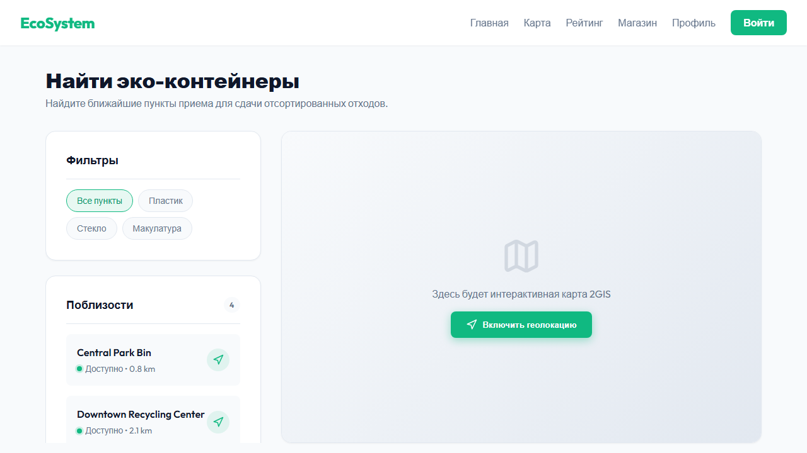
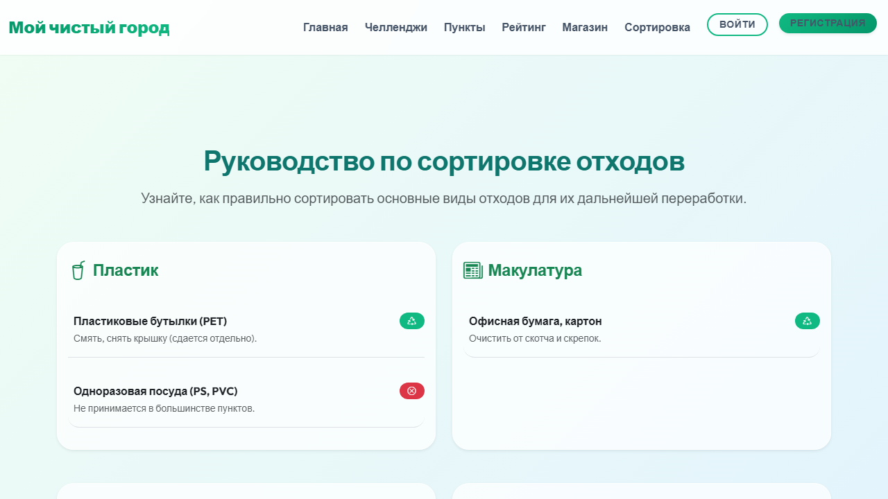
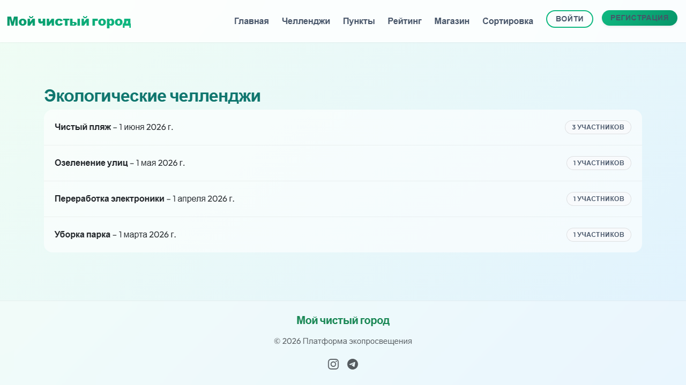
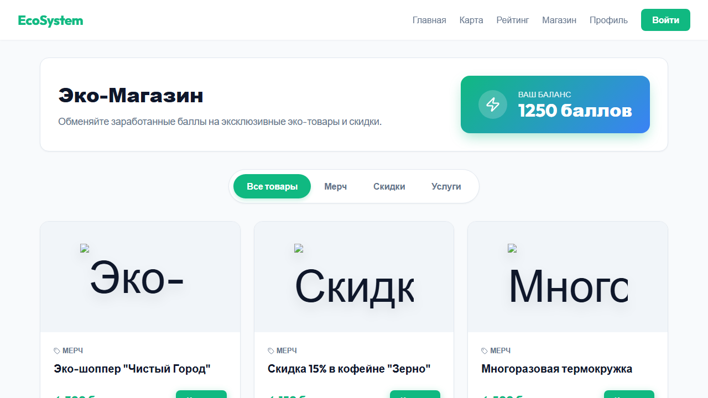

class: center, middle # Платформа экопросвещения ## "Мой чистый город" ### Выполнил: Кенжегарин Алмас > "Добрый день! Меня зовут Кенжегарин Алмас, и я представляю проект «Мой чистый город». Это платформа экопросвещения, созданная для того, чтобы помочь каждому жителю сделать первый шаг к более экологичному образу жизни." --- # Проблема и Цель проекта * **Проблема:** Недостаток информации о правильной утилизации отходов и низкая вовлеченность в эко-инициативы. * **Цель:** Создать единую и удобную платформу для образования, мотивации и практической помощи в защите окружающей среды. > "Многие люди хотят сдавать вторсырье и помогать природе, но их останавливает недостаток информации. Непонятно, где ближайший пункт, как подготовить упаковку и с чего начать. Наша цель — разрушить эти барьеры, создав единую, понятную площадку, которая объединяет теорию и практику." --- # Для кого мы это делаем? (Целевая аудитория) * Неравнодушные жители города, желающие внести свой вклад. * Начинающие экоактивисты, ищущие информацию о правильной сортировке. * Волонтеры, готовые участвовать в экологических акциях. > "Для неравнодушных жителей, для начинающих экоактивистов, которым нужна простая база знаний без сложных терминов, и для волонтеров, готовых объединяться для участия в важных акциях." --- # Как это работает? Обзор функционала 1. Интерактивная карта 2GIS (Locations) 2. База знаний по сортировке (Sorting) 3. Экологические челленджи (Challenges) 4. Эко-магазин поощрений (Rewards) 5. Личный кабинет пользователя (Accounts) > "Мы разработали платформу с пятью разделами: эко-карта на базе 2GIS, база знаний по сортировке, экологические челленджи, эко-магазин поощрений и личный кабинет пользователя." --- # Главная страница проекта <p></p> > "Это главная страница нашей платформы. Отсюда пользователи могут быстро перейти к основным разделам или зарегистрироваться как волонтеры." --- # Найти ближайший контейнер — легко! <p></p> * Удобный поиск ближайших точек для сдачи различных видов отходов. * Информация о времени работы и принимаемых фракциях. > "В разделе «Пункты» мы реализовали интерактивную карту. Пользователь может легко найти ближайшую к дому или работе точку сбора. В планах — детализировать карту фильтрами по типам фракций." --- # Теория без скуки <p></p> * Понятные и доступные инструкции по правильной подготовке и сортировке мусора. > "Как правильно сдать сырье? В разделе «Сортировка» собраны четкие, пошаговые инструкции. Мы рассказываем, почему пластик нужно смять, а стаканчики от кофе — не макулатура." --- # Геймификация добра <p></p> * Индивидуальные и командные задания. * Отслеживание прогресса и формирование полезных привычек. > "Делать добрые дела вместе веселее. Раздел «Челленджи» — сердце нашего комьюнити. Здесь пользователи находят активные акции в городе." --- # Награда за экологичность (Эко-магазин) <p></p> * Возможность обмена накопленных эко-баллов на реальные товары и мерч. * Поддержка зеленого бизнеса и дополнительная мотивация пользователей. > "За активное участие в жизни проекта пользователи получают баллы. Их можно потратить в нашем Эко-магазине на полезные и экологичные товары от партнеров. Это делает эко-привычки еще приятнее!" --- # Что было сделано (Техническая часть) * **Backend:** Спроектирована архитектура на Python/Django, созданы модели БД (SQLite). * **Приложения:** Разработаны `accounts`, `challenges`, `locations`, `sorting`, и новый модуль `rewards` (Эко-магазин). * **Frontend:** Интегрирована карта 2GIS, разработано отдельное React-приложение с переводом на русский. * **Наполнение:** Проект заполнен тестовыми данными, сгенерированы AI-изображения для товаров магазина. > "В ходе работы над проектом я развил базовую архитектуру: мигрировал карту на 2GIS, внедрил Эко-магазин поощрений и создал современный SPA frontend на React, полностью переведенный на русский язык." --- # Планы на будущее * Добавление системы рейтингов и поощрений для активных участников. * Интеграция с местными перерабатывающими компаниями. * Разработка мобильной версии или приложения. > "Что дальше? Мы хотим внедрить геймификацию (рейтинги, ачивки), запустить партнерские программы с бизнесом для предоставления бонусов за сдачу вторсырья и разработать мобильное приложение." --- class: center, middle # Спасибо за внимание! ### Давайте сделаем наш город лучше вместе! > "Город начинается с каждого из нас. Платформа «Мой чистый город» дает все инструменты, чтобы этот первый шаг был простым и приятным. Спасибо за внимание! Буду рад ответить на вопросы."